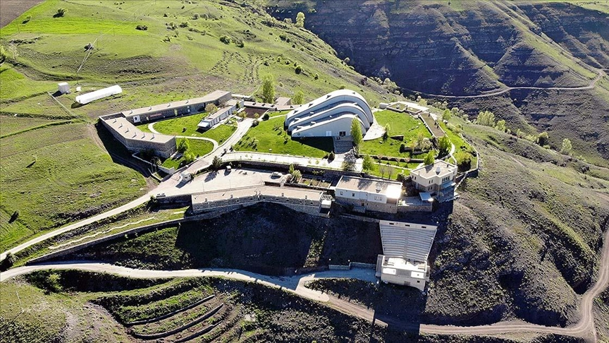

Baksı Müzesi Bayburt’a 45 km uzaklıktaki Bayraktar Köyü'nde kurulu sanat müzesidir. Kurulduğu Bayraktar Köyü'nün eski adı olan baksı sözcüğü eski Türklerde bilgin, hekim, şaman anlamlarına gelmektedir. Müze, çağdaş sanat ve geleneksel el sanatlarına ev sahipliği yapmaktadır.
Sergi salonları, depo müze, atölyeler, konferans salonu, kütüphane ve konukevi gibi bölümlere sahip olan müze 40 dönümlük bir alanda kurulmuştur. Bayburtlu sanatçı ve akademisyen Prof. Dr. Hüsamettin Koçan tarafından 2012'de inşa edilmiştir. 2000 yılında oluşmaya başlayan müze fikri, 2005 yılında bir Baksı Kültür Sanat Vakfı ile gelişmeye devam eder. Ana bina, 2010 yılında devletten hiçbir maddi yardım almadan, tamamlanır. 2010 yılı Haziran ayında İstanbul Modern Tanıtımı, Temmuz ayında ise halka açılışı yapılmıştır. 2012 yılında Müze’nin yeni sergi salonu olan Depo Müze açılmıştır.
Baksı Müzesi, Avrupa Parlamenterler Meclisi himayesinde verilen “2014 Yılı Avrupa Konseyi Müze Ödülü”nü, 8 Nisan Salı günü Strazburg, Palais Rohan’da aldı. Ödülün simgesi olan Joan Miro’nun Güzel Göğüslü Kadın isimli bronz heykelciği 1 yıl boyunca Müze’de sergilendi.
